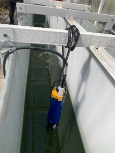
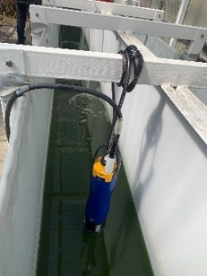
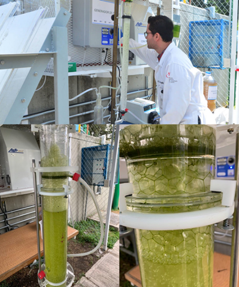
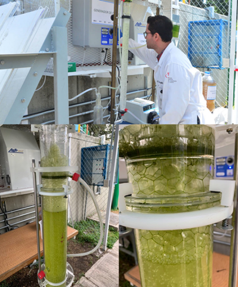
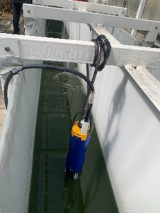
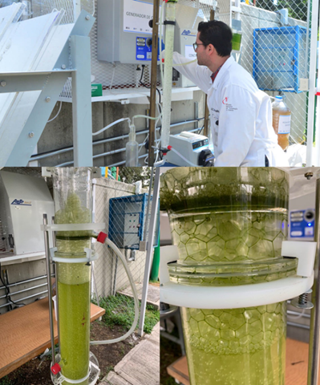

 


Por: Grupos Interdisciplinarios de Investigación
Nombre del proyecto:
Intensificación de los procesos para la obtención de biocompuestos a partir de agua residual.
Eje Temático Estratégico de Investigación:
Nexo Agua-Energía-Medio Ambiente-Seguridad Alimentaria.
Líder de proyecto:
Dra. María Teresa Orta Ledesma, Investigadora Titular C, Instituto de Ingeniería, UNAM.
Resumen
Atendiendo la convocatoria: Grupos Interdisciplinarios de Investigación del Instituto de Ingeniería, UNAM (GII-IIUNAM) y en concordancia con los Ejes Temáticos Estratégicos de Investigación (ETEI) Ciudades inteligentes y Nexo Agua-Energía-Ambiente-Seguridad alimentaria, del Programa Especial de Innovación Estratégica para el Desarrollo Nacional (PROINDEN) de la UNAM, se conformó un Grupo Interdisciplinario de Investigación (GII). El proyecto del GII tiene por objetivo intensificar los procesos para la obtención de biocompuestos a partir de agua residual, bajo el concepto de economía circular. Aborda los temas de investigación: Descarbonización, ambiente y energía (Tema 1); Seguridad alimentaria y energía (Tema 2); y Energía y gestión integral del agua, seguridad hídrica y derecho al agua (Tema 4). Para ello se cuenta con la participación de un grupo interdisciplinario de destacados académicos expertos en: Tratamiento y reuso de agua, simulación y control de procesos, diseño de plantas y transferencia de tecnología, análisis tecno-económico y ambiental de los procesos, energías renovables, bio-refinería, energía y combustión, fenómenos de superficie, caracterización y expresión génica de cepas, y manejo de recursos hídricos. Las entidades que conforman este GII son: el Instituto de Ingeniería, Instituto de Energías Renovables, Facultad de Ciencias y la Facultad de Química de la UNAM. También se cuenta con la participación de investigadores extranjeros de la School of Engineering, Newcastle University, del Reino Unido.
El proyecto tiene entre otras metas, el proveer una tecnología sostenible para el tratamiento de agua con producción de biomasa de microalgas, con criterios técnico-económicos de diseño, factible de implementarse en la industria, el gobierno o en una comunidad. Potenciar el aprovechamiento de biomasa microalgal como fuente de energía renovable (biocombustibles), bioplásticos y biofertilizantes, a partir de agua residual. Evaluar la factibilidad del uso de biocombustibles generados en motores de combustión interna. Impulsar el aprovechamiento de la biomasa residual como biofertilizante y mejorador de suelo. Desarrollar una tecnología de secado solar que sea accesible para pequeñas plantas descentralizadas para potenciar el aprovechamiento de la biomasa microalgal. Establecer los usos potenciales del agua residual tratada de acuerdo a la normatividad vigente. Reducir los impactos ambientales, huella terrestre, hídrica, y de carbono, proponiendo un sistema de valorización de las aguas residuales mediante el tratamiento con microalgas y aprovechamiento de la biomasa. El planteamiento de este proyecto se basa en investigaciones previas realizadas por el grupo Tecnologías Innovadoras en Ingeniería Ambiental
del Instituto de Ingeniería de la UNAM y la Escuela de Ingeniería de la Universidad de Newcastle, UK. En este contexto, la propia Organización de las Naciones Unidas ha reconocido que las aguas residuales son un recurso no aprovechado y que es una fuente explotable de agua, energía, nutrientes y subproductos valorizables.
Una forma de mejorar el tratamiento y la viabilidad económica de los procesos es adoptando nuevas tecnologías que generen ingresos procedentes de las aguas residuales. Las investigaciones realizadas se han enfocado en desarrollar un sistema de tratamiento terciario de aguas residuales. El principio de la tecnología es el uso de organismos fotosintéticos como las microalgas cuya biomasa puede ser valorizada para obtener productos de valor antes mencionados. El sistema se complementa con una tecnología de vanguardia para la recuperación (cosecha) de la biomasa producida denominada ozonoflotación, la cual, además, es un proceso de desinfección del agua residual tratada. Para tal efecto se diseñó y construyó un prototipo a escala semipiloto denominado Atzintli en colaboración con la Universidad de Newcastle, que consiste en un reactor de alta tasa con un volumen de trabajo de 1.2 m3, un sedimentador de 1m3 y una columna de flotación con ozono-aire de 12L, que operan por lotes. La tecnología desarrollada y aplicada en el prototipo, reduce las emisiones de carbono y la energía necesaria para limpiar el agua, produciendo microalgas como biomasa. El proyecto se dirige a una nueva forma de gestión de las aguas residuales, a través de la intensificación de los procesos desarrollados para el tratamiento de agua residual, productividad de biomasa y obtención de biocompuestos.
Dra. María Teresa Orta Ledesma
Semblanza
Investigadora del Instituto de Ingeniería de la Universidad Nacional Autónoma de México. Es Doctora en Ciencias Químicas por la Universidad de Rennes, Francia.
Tiene cerca de 100 informes de proyectos, más de la mitad de los cuales son patrocinados y de circulación restringida. Es autora de más de 200 publicaciones; 64 de estas publicaciones son artículos arbitrados. Junto con su grupo de investigación posee 7 patentes, 2 de ellas han sido transferidas. Ha participado en 5 normas mexicanas para el agua y cuenta con 18 desarrollos tecnológicos.
La Doctora Orta lleva muchos años comprometida con la sostenibilidad, especialmente con la calidad, tratamiento y uso adecuado del agua potable. Ha dado conferencias plenarias en congresos internacionales de alto nivel y ha formado parte de comités científicos de organizaciones internacionales. Creó dos laboratorios de innovación, uno en Nuevo Laredo y otro en el IMP. Actualmente es Nivel 2 del Sistema Nacional de Investigadores.
Proyecto GII
Intensificación de procesos para la obtención de biocompuestos a partir de aguas residuales (Eje estratégico de investigación: Nexo Agua-Energía-Medio Ambiente-Seguridad Alimentaria).
Credenciales
• Doctorado en Ciencias Químicas, Ecole Nationale de France, Universidad de Rennes I, Francia.
• Maestría en Ingeniería Sanitaria, División de Estudios de Posgrado, Facultad de Ingeniería, Estado de México.
• Licenciatura en Ingeniería Química, Facultad de Química, Universidad Nacional Autónoma de México.
Contacto
E-mail: MOrtaL@iingen.unam.mx
Tel: +52 (55) 56233600 x 3672
Galería


Colaboradores
Dr. Ignacio Monje Ramírez.
Mtra. Isaura Yáñez Noguez.
Dra. Jessica Karina Suastes Rivas.
Dr. Mario Alberto Martínez Vitela.
Dr. Jesús Gracia Fadrique.
Ing. David Abraham Santoyo García.
Ing. Luis Alejandro de la Cruz Velázquez.
Estudiante Lic. Sandra Angélica Camargo Torres.
Estudiante Lic. Marcos Ivan Bertadillo Manzano.
Estudiante Lic. Laura Citlalli Manrique Sánchez.
Estudiante Lic. María José Romero Pineda.
Estudiante Lic. Ana Cristina Flores Martínez.
Estudiante Lic. Jatziri López Reyes.
Estudiante Lic. Ramón Alberto Pichardo Aquino
Estudiante Lic. Edgar Eduardo Cedillo Cornejo.
Estudiante Lic. Oscar Santiago Garcia Franco.
Estudiante Lic. Santos Daniel Martinez Hernandez.
Estudiante Lic. Sandoval Castro Misael Natanael.
Estudiante Lic. Ana Elizabeth Gómez Herrera.
Estudiante Lic. Emir Eduardo Meléndez Hernández.
Estudiante Lic. Miriam Gutiérrez Rodriguez.
Estudiante Lic. Dana Lorena Vázquez de los Reyes.
Estudiante Lic.Luz Jazmín Herrera Velázquez.
Estudiante Lic.Mart ín Samuel Sarmiento Suárez
Estudiante Mtría. Luis Ángel Mendoza Valle
Estudiante Doc. Rubén Carlos Esquivel Hernández
Estudiante Doc. Copca Maya Eduardo Omar
Estudiante Doc. Sebastián Hernández Caire
Estudiante Doc. Misael Ramírez Lozano
Estudiante Doc. Nicolás Iván Román Roldán
Estudiante Doc. Laura Gabriela Vargas Estrada
Dra. Blanca Jiménez Cisneros Mtra. Catalina.
Mtra. Maya Rendón.
Dr. Simón González Martínez.
Dr. Armando González Sánchez.
Dr. Juan Manuel Morgan Sagastume.
Dr. Oscar Fuentes Mariles.
Dr. Jaime Alberto Moreno.
Dr. William Vicente Y Rodríguez.
Mtro. Enrique Ramón Gómez Rosas
Mtro. Miguel Ángel Mendoza García
Dra. Idania Valdés Vázquez
Dra. Dulce María Arias Lizarraga -- Como representante del grupo del Instituto de Energías Renovables.
Dra. Claudia Andrea Segal Kischinevzky
Dr. James Enrique González Flores
Q. Viviana Escobar Sánchez
Biól. Miguel Ángel Rosas Paz
Biól. Diana Villarreal Huerta
Dra. Anabel López Ortiz
Dr. Patrick Ugochukwu Okoye
Dr. Octavio García Valladares
Dr. Hugo Olvera Vargas
Dra. Sharon Belinda Velásquez Orta
Instituciones externas al IIUNAM
Instituto de Energías Renovables UNAM. »
Secretaría de Fomento Turístico. Gobierno del estado de Yucatán. »